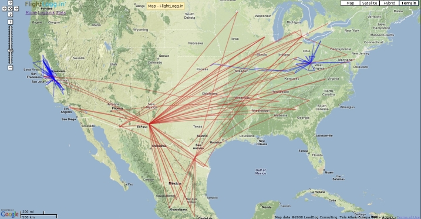
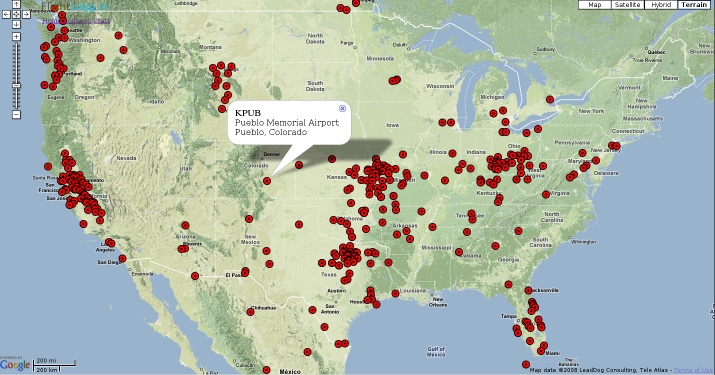
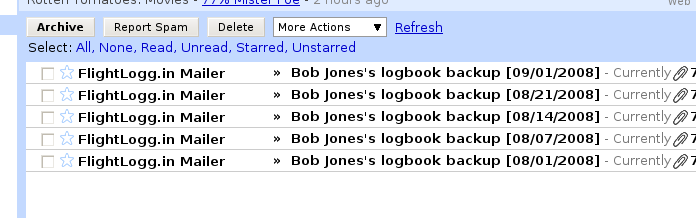
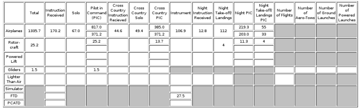
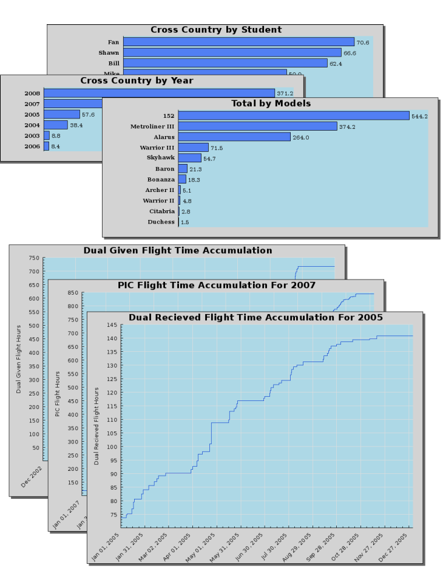
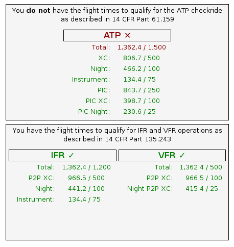
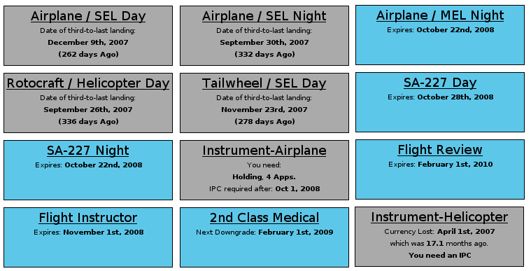
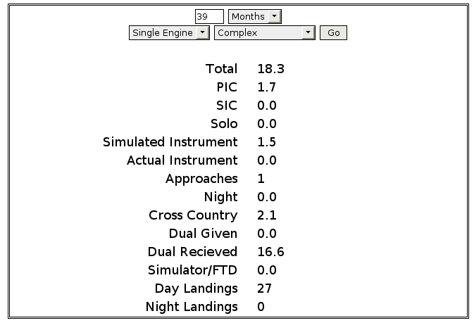

What is this, and why is it here?
Its a logbook web application. It's here to assist pilots in keeping track of their flight time. Paper logbooks are prone to getting lost or destroyed,
and are a pain to create calculations and summaries. With this site, you never have to worry about leaving your logbook at home, or at the airport,
because it's always accessible from a internet ready computer, which are very easy to come by these days.
What sets this apart from all the other online pilot logbook applications?
Flightlogg.in' has a lot more features that other pilot logbook applications do not have. Here is a quick rundown of what the site can do:

Map out each route you've flown with Google Maps.

Create an interactive map with each airport you've flown into.

Automatically recieve a complete backup file of you logbook weekly.
Custom signature images displaying to the world your flight times. Place this image on your blogs, in your forum signature; anywhere you please.

Easily calculate 8710 data

Easily create graphs comparing flight times in various types of airplanes

Quickly and automatically determine if you have the APT minimums or Part 135 PIC minimums, includinf automatic point-to-point cross country time
calculation.

Automatic currency reminders for every category/class combination you can think of. Including type rating currency.

Calculate specialized logbook totals.
OK great! I'm convinced, I'll sign up! How much does it cost for a years membership?
Zero dollars. I don't believe in charging for things just because you can. Now-a-days webhosting is dirt cheap. There are plenty of site out there
that have a ton of traffic and get by without resorting to littering the site with ads, or charging a membership fee. Currently I pay 8 dollars a
month to run the webserver this site runs on. I'm not a rich person by any means, but $8 a month is nothing. Furthermore, it probably won't be until
at least a few years from now before the sites outgrows it current hosting and will need to relocate to more expensive hosting.
In summary, the site doesn't need to charge for membership, therefore the site will not charge for membership.
I've come to learn that you usually get what you pay for. Since this site is free, it probably isn't any good, I'll rather pay $90 a year on this other site.
Good for you! Just remember, some of the best sites on the internet are free: Facebook, Google, Yahoo, YouTube, RunwayFinder,
AirNav, etc.
Ah, I see. I changed my mind, I think I'll sign up! Only one problem, though. I already have my logbook digitalized in another format. Will I have to start all
over again from scratch?
No you will not have to start over again from scratch! Flightlogg.in' has a feature that allows you to import flights from another format, such as LogShare backup files,
and spreadsheet files. If your logbook is in any other format thats not already supported, fell free to send in the file, and we'll figure out a way to get it to work.
Whats the history behind FlightLogg.in'?
I started using a certain other electronic logbook website around early 2004. I thought it was a brilliant idea being able to access your logbook from anywhere, as
well as never having to worry about losing your logbook in a fire, or losing all your logbook data in a computer crash. The only problem was the site was very lacking
in features, and I knew I could do better. In October 2007, I began working on FlightLogg.in' and eventually launched the site in early May, 2008.